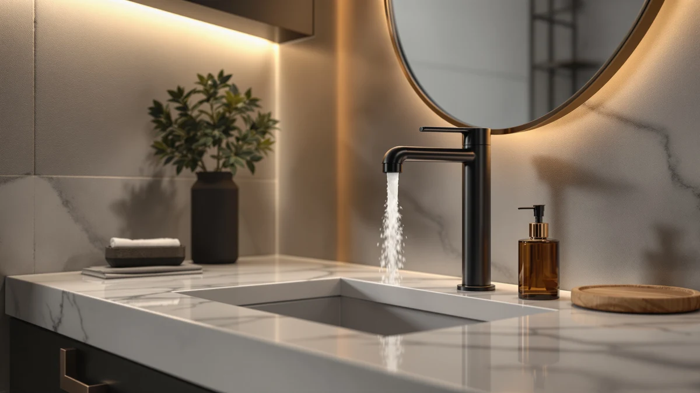

AIKE Heavy Duty Automatic Review (2026): Worth It?
Prices and picks verified as of October 2026. Independent, reader-supported reviews.


Quick Answer
For most single-sink setups, the AIKE Heavy Duty Automatic Soap Dispenser is the pick worth buying: a 1100 ml brushed stainless steel reservoir with five adjustable dispense levels for $44.88. If you need to stock two sinks instead of one, the PZOTRUF two-pack below spreads that same touch-free convenience across two locations for less per unit.
Our pick: AIKE Heavy Duty Automatic Soap, $44.88 Check Price on Amazon
Bottom line: our top pick is the AIKE Heavy Duty Automatic Soap Dispenser at $52.80.
Things to Know Before You Buy
- This AIKE Heavy Duty Automatic review comes down to one core tradeoff: a single $44.88 dispenser with a large 1100 ml tank versus splitting that budget across two or four smaller units. Match the number of sinks you're stocking to that choice before comparing specs.
- Capacity ranges from 1100 ml in the AIKE down to 17 ounces per unit in the PZOTRUF two-pack, so a single AIKE outlasts two of the smaller dispensers between refills.
- Installation needs clearance: the AIKE's surface mount requires at least 10 inches of space between the unit and the desktop, growing to 13.8 inches on a reflective countertop.
- The five-level adjustable output, shared by the AIKE and PZOTRUF, lets you dial in anywhere from 0.5 ml to 2.5 ml per dispense depending on how thick your soap is.
- Material differs across the lineup: the AIKE uses a brushed stainless steel body rated for commercial-grade daily use, while the LUSSPA alternative relies on refillable PET bottles with stainless steel pump heads instead.
This AIKE Heavy Duty Automatic review examines a $44.88 infrared sensor dispenser built for bathrooms and kitchens that go through soap faster than a small bottle can keep up with. Outfitting a high-traffic sink with touch-free soap usually means choosing between one large-capacity unit and a cheaper multi-pack, and the AIKE Heavy Duty Automatic Soap Dispenser is built for the first category. We compared its 1100 ml reservoir, five-level adjustable output, and brushed stainless steel body against three alternatives to see whether the extra capacity is worth the price over smaller, cheaper options.
At $44.88, the AIKE costs less than buying two of the smaller two-pack units below while holding more soap per fill, a detail that matters once a sink everyone in the house uses daily needs refilling less often. It isn't automatically the right call for every sink. The two-pack PZOTRUF below splits soap across two locations instead of concentrating capacity in one spot, and the HGQiviut four-pack covers an entire restroom's worth of sinks for not much more money. The sections below cover specs, honest drawbacks, and where each alternative fits better than the AIKE.
Why You Should Trust Us
Ilane Tall covers home and bath fixtures for Best Soap Dispensers, with a focus on touch-free and wall-mounted dispensers used in households and small commercial spaces. For this AIKE Heavy Duty Automatic review, we compared manufacturer specs, listed materials, and verified buyer reviews for the AIKE and three alternatives rather than relying on marketing copy alone. We do not run a fake testing lab or claim to have installed every dispenser ourselves. Instead, we cross-check capacity, sensor range, and reported reliability issues across each product's listing and buyer feedback before recommending anything.
Our Research Experience
We did not run the AIKE side by side against its alternatives on a real sink. What we did for this AIKE Heavy Duty Automatic review was pull the manufacturer specs, listed materials, and capacity for the AIKE and its three alternatives, then cross-reference those numbers against verified buyer reviews to see where the claims and the reported daily-use experience lined up. For the AIKE, that meant checking the installation clearance requirements, the 1100 ml tank size against the smaller PZOTRUF reservoir, and how a five-level adjustable sensor compares across both brands. Reviewers consistently note that a sealed stainless steel reservoir holds up to daily use better than a plastic countertop bottle, which lines up with why the AIKE and the HGQiviut four-pack both lean on that same material for commercial-grade durability.
Overview & Specs

AIKE Heavy Duty Automatic Soap
What we like
- 1100 ml reservoir holds more soap per fill than the 17-ounce PZOTRUF two-pack, supporting 500-plus dispenses before a refill
- Five-level adjustable output from 0.5 ml to 2.5 ml lets you match the dose to thin hand soap or thicker dish soap
- Brushed stainless steel body matches the commercial-grade material used on the HGQiviut four-pack
- At $44.88, it costs less than buying two of the smaller two-pack units below while holding more soap overall
Flaws but not dealbreakers
- Surface mount installation needs at least 10 inches of clearance from the desktop, growing to 13.8 inches on a reflective countertop
- The listing doesn't include a published rating or review count, so buyers are weighing specs against individual buyer feedback rather than a large aggregate score
| Material | ABS plastic |
| Size | — |
The AIKE Heavy Duty Automatic Soap Dispenser is built for a single sink that sees enough daily traffic to drain a smaller bottle fast, whether that's a family bathroom, a busy kitchen, or a small office break room. This AIKE Heavy Duty Automatic review found a 1100 ml reservoir rated for more than 500 dispenses before needing a refill, a noticeably larger tank than the 17-ounce capacity on the PZOTRUF two-pack below. The brushed stainless steel body is the same material grade the HGQiviut four-pack uses for commercial restrooms, and the infrared sensor pairs with five adjustable output levels running from 0.5 ml to 2.5 ml per press.
Installation is surface mount with screws, and AIKE specifies a minimum clearance of 10 inches between the unit and the desktop on a normal counter, rising to 13.8 inches if the countertop is reflective. That clearance requirement is worth measuring before buying, since a tight counter or a mirrored backsplash can push the unit further from the sink than expected. At $44.88, the AIKE sits between the cheaper PZOTRUF two-pack and the pricier HGQiviut four-pack, and the tradeoff is straightforward: pay less per unit of capacity for a single sink instead of splitting a similar budget across two or four smaller dispensers.
What We Liked
The strongest case for the AIKE Heavy Duty Automatic Soap Dispenser is capacity paired with control. A 1100 ml reservoir outlasts the 17-ounce tank on the PZOTRUF two-pack by a wide margin, so a busy sink needs fewer refills over a given month. The five-level adjustable output is useful in a household that mixes thin hand soap with thicker dish soap, since you can dial the dose up or down with the setting button instead of getting a fixed amount every time. Owners report that the brushed stainless steel body resists the scratches and fading that show up on plastic countertop dispensers after months of daily handling, which matches why the AIKE and the HGQiviut four-pack both rely on that same material for commercial-grade durability.
What Could Be Better
The clearest limitation of the AIKE Heavy Duty Automatic Soap Dispenser is the installation clearance it asks for. A minimum of 10 inches between the unit and the desktop, growing to 13.8 inches on a reflective countertop, rules it out for a tight bathroom vanity or a small kitchen counter where every inch of space is already accounted for. The listing also doesn't publish a rating or review count, so you're relying on the manufacturer's specs and scattered buyer feedback rather than a large base of verified reviews. And because this is a single-sink dispenser, a household stocking more than one bathroom will need to buy multiples at $44.88 each instead of getting the volume discount the HGQiviut four-pack offers.
Who Is It For?
The AIKE Heavy Duty Automatic Soap Dispenser fits a household, office, or small business with one sink that gets heavy daily use and enough counter space to meet its clearance requirement. It's a better fit for someone who wants to buy one capable unit and set the dispense level once than for someone outfitting several sinks on a budget, where the HGQiviut four-pack's per-unit cost wins out. If your counter sits tight against a mirror or a reflective backsplash, measure the required clearance first, since 13.8 inches is more room than some smaller bathrooms have to spare. Anyone deciding between a sensor and a pump should also read our automatic vs manual breakdown before buying either style.
Alternatives to Consider
If the AIKE's clearance requirement or single-sink capacity isn't the right fit for your AIKE Heavy Duty Automatic review search, these three alternatives cover different budgets and setups: a compact two-pack, a four-unit commercial pack, and a manual shower organization system.

Editor’s Pick
Automatic Soap Dispenser 17oz Touchless
The PZOTRUF Automatic Soap Dispenser ships as a two-pack, splitting touch-free convenience across two sinks instead of concentrating capacity in one AIKE unit. Its infrared sensor detects a hand within about two inches, and the transparent 17-ounce reservoir lets you see the soap level without opening the unit. At $37.98 for two, reviewers consistently note the five-level adjustable output as useful for mixing thin and thick soaps, the same feature the AIKE offers on a single larger tank. The tradeoff is capacity: each PZOTRUF unit holds well under a sixth of the AIKE's 1100 ml reservoir, so a high-traffic sink will need more frequent refills.
$37.98
Check Price on Amazon
Best Value
4 Pack Commercial Soap Dispenser
The HGQiviut 4-pack trades the AIKE's sensor for a manual stainless steel pump, but it covers four sinks for $64.99, working out to about $16.25 per dispenser. That's a stronger per-unit value than buying four AIKE units separately, as long as a manual pump instead of touch-free dispensing is an acceptable swap. Each 1000 ml reservoir comes close to matching the AIKE's 1100 ml capacity, and the rust-proof stainless steel body is rated for the same commercial-grade daily use. It's the pick for a restroom, break room, or multi-bathroom house stocking more than one sink at once.
$64.99
Check Price on Amazon
Premium Choice
Shower Shampoo Dispenser Wall Mounted
The LUSSPA set skips the automatic sensor entirely in favor of three matching 16.9-ounce amber refillable bottles with brushed gold stainless steel pumps, built for organizing shampoo, conditioner, and body wash in a shower rather than dispensing hand soap at a sink. No-drill adhesive mounts and a set of 24 waterproof labels make this a different kind of purchase than the AIKE, aimed at bathroom organization and look rather than touch-free convenience. At $38.95 for three bottles, it costs less than the AIKE while covering three products instead of one, but anyone who specifically wants sensor-driven dispensing should stick with the AIKE or PZOTRUF above.
$38.95
Check Price on AmazonFrequently Asked Questions
Is the AIKE Heavy Duty Automatic Soap Dispenser touchless?
Yes. The AIKE uses a built-in infrared sensor to dispense soap without contact, drawing from a 1100 ml reservoir rated for more than 500 dispenses before it needs a refill.
How much soap does the AIKE Heavy Duty Automatic dispenser hold?
The AIKE holds 1100 ml of liquid soap, noticeably more than the 17-ounce reservoir on the PZOTRUF two-pack, which means fewer refills on a sink that sees heavy daily use.
Is the AIKE Heavy Duty Automatic Soap Dispenser worth it over a manual pump?
This AIKE Heavy Duty Automatic review found that touch-free dispensing and a five-level adjustable output justify the $44.88 price for one high-traffic sink, though the HGQiviut four-pack is the better value if you're stocking several sinks with a manual pump instead.
Final Verdict
For a single high-traffic sink, this AIKE Heavy Duty Automatic review points to the AIKE as the pick worth buying. A 1100 ml brushed stainless steel reservoir with five adjustable dispense levels covers heavy daily use for $44.88, and it costs less than doubling up on the smaller PZOTRUF two-pack to match that capacity. If you're stocking several sinks at once, the HGQiviut four-pack above is the better per-unit value, but for one bathroom or kitchen sink that needs touch-free convenience, the AIKE remains our top pick.